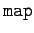
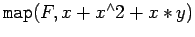
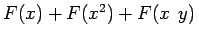
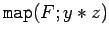
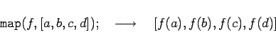

Inhalt Index DeskTop Bronstein

 Computeralgebrasysteme Maple Prozeduren, Funktionen und Operatoren
Computeralgebrasysteme Maple Prozeduren, Funktionen und Operatoren


Der Operator  kann in Maple benutzt werden, um einen Operator bzw. eine Prozedur auf einen Ausdruck bzw. dessen Komponenten anzuwenden. Sei z.B. F eine Prozedur, die eine Funktion repräsentiert. Dann liefert  den Aussdruck . Entsprechend erhält man mit  das Resultat F(y)*F(z).
| Beispiel |
|

|